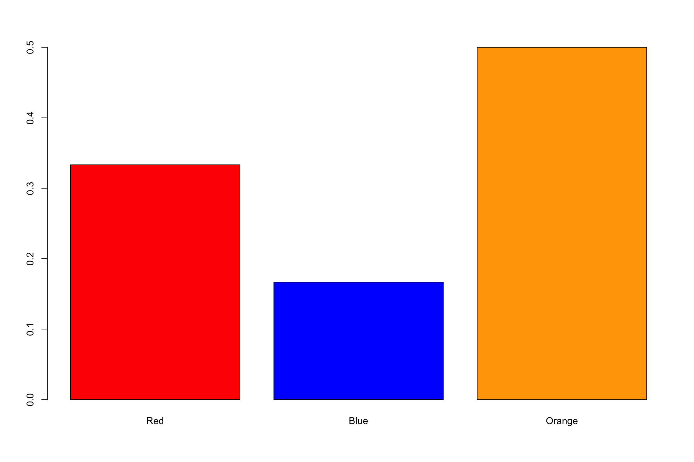

Before we can talk about inferential satistics we have to understand probability.
We all know, that if I toss a quarter in the air. There are only two possible options. Either the coin lands on a head, or it lands on a tail.
coin=c("head","tails")
sample(coin,1)[1] "head"By using the sample() function, we can tell R to randomly sample an event for us.
We ‘tossed’ a coin, and it landed on heads. What is the probabiity of this happening?
Probablity is written as:
\[P(A) = \frac{1}{2} = .5000\]
In other words, the number of possible outcomes favorable to A divided by the total number of possible outcomes.
Let’s think about this in terms of playing cards:
In a standard card deck, there are 52 total cards:
What is the probability of picking a King of Hearts
\[P(King of Hearts) = \frac{1}{52}= .0192\]
What is the probability of picking a 10 of Hearts and a Nine of Hearts with replacement?
\[P(10 of Hearts) - P(9 of Hearts) \frac{1}{52}X \frac{1}{52} = .01923X .01923 = .00037\] What is the probability of picking a 10 of Hearts and a Nine of Hearts without replacement?
Ten_of_Hearts = 1/52
Ten_of_Hearts[1] 0.01923077Nine_of_Hearts = 1/52
Ten_of_Hearts*Nine_of_Hearts[1] 0.0003698225\[P(10 of Hearts) - P(9 of Hearts) \frac{1}{52}X \frac{1}{51} = .01923X .01961 = .00037\]
Ten_of_Hearts = 1/52
Ten_of_Hearts[1] 0.01923077Nine_of_Hearts = 1/51
Nine_of_Hearts[1] 0.01960784Ten_of_Hearts*Nine_of_Hearts[1] 0.0003770739In order to do work with some datasets, we need to know what they are composed of. So far we have many worked with numbers. If we were to look at string data. Also know as, character data, we can use a new command caled which(). Additionally we can also use a workaround using something new: ==. Without getting into the details, there is a difference between = and ==.
There are two different ways we can break-up our data.
We can use a command such as:
z=c(10,30,14,80,91,10) #Have my datset
length(which(z == 10)) #Return the length of Z when "10" is present.[1] 2length(which(z<91))#Return the length of Z when a score is less than `<`[1] 5length(which(z>91))#Return the length of Z when a score is less than `<`[1] 0The below code will allow you to take a set of data and see what proportion is accounted for given a certain criteria.
For example: If I have a data set of 1’s and 0’s, how can I know how many I have of each. Additionally, how can I tell the proportion of each?
To do this we need to use the which()command as well as how much od the data is made up of 1’s and 0’s.
x=c(0,0,0,0,1,1,0,0,1,1,1,1,0,0,1,0,1,0,1,0,1,1,1,0,1,0,1)
x [1] 0 0 0 0 1 1 0 0 1 1 1 1 0 0 1 0 1 0 1 0 1 1 1 0 1 0 1one = length(which(x==1))
one[1] 14zero = length(which(x==0))
zero[1] 13length(x)[1] 27one + zero[1] 27one/length(x)[1] 0.5185185zero/length(x)[1] 0.4814815We can see here that the amount of 1’s is pretty close to the amount of 0’s. Now let us try with a more involved example.
d=c("red","red", "blue","orange", "orange","orange") #Imaigine they are marbles
x= rep(d,20) #Repeat this arrangement 20 times
rl=length(x[x=="red"]) #What is the length of x that contains "red"
rl[1] 40rb=length(x[x=="blue"])#What is the length of x that contains "blue"
rb[1] 20ro=length(x[x=="orange"])#What is the length of x that contains "orange"
ro[1] 60rl+rb+ro #How many colors do we have?[1] 120xl=length(x) #How many colors do we have(easy way)?
xl[1] 120rp=rl/xl #What is the prportion of red compared to the entire dataset
rp[1] 0.3333333bp=rb/xl#What is the prportion of blue compared to the entire dataset
bp[1] 0.1666667op=ro/xl#What is the prportion of orange compared to the entire dataset
op[1] 0.5barplot(c(rp,bp,op),col=c("red","blue","orange"),names.arg=c("Red","Blue", "Orange"))
#Draw a barplot with these different proportionsrnorm()In most, if not all of my slides, you have seen me use the function rnorm(). In class, I’ve used this as a way to generate large sets of data with one line of text. There are a few arguments that are necessary in order to take this function and use it for the purposes of sampling.
rnorm() stands for “Random Normal”. Essentially, what rnorm() does it create a random set of numbers (specified by you) and generates data.
Here are the arguments rnorm() accepts:
n: Specifies the number of data points you want to create.
mean: Specifies the mean you want your sample to have.
sd: Specifies the standard deviation you want your sample to have.
Although not essential, a nice function to use is round( digits = )
rnorm() the numbers are a little messy.So, let’s make a sample of 20 numbers with a mean of 12 and a standard deviation of 3.
x = rnorm(20,12,3)
x [1] 13.097284 15.506223 3.880974 13.454414 10.355446 9.762859 12.940350
[8] 12.737303 10.744033 11.713643 14.068619 17.126588 15.664308 9.463079
[15] 13.263097 9.466081 15.763571 13.006123 6.281570 12.017433See how the numbers came out a little unwieldy? Let’s fix that:
x=round(rnorm(20,12,3),digits=2)
x [1] 14.76 13.40 13.71 10.53 13.43 12.41 11.35 8.17 15.06 10.10 5.06
[12] 11.58 8.97 13.29 12.76 12.84 10.26 13.45 16.24 10.07Notice how the digits= command is preceded by a comma. This is because it is a part of the round() function but not a part of the rnorm() function.
We can specify the mean and the standard deviation of the dataset, but does introducing the variability of the standard deviation make it harder for the mean to be exactly what we asked for? Let’s see!
x=rnorm(100,12,3)
x = round(x, digits = 2)
mean(x)[1] 12.1244We can have our dataset of 100 points, but if we take a sample of that data, how representative will it be if the true mean?
Let’s take a look:
set.seed(11)
x=round(rnorm(10000,10,10),digits = 2)
s1=sample(x,1000)
s2=sample(x,100)
s3=sample(x,10)
mean(s1)[1] 10.06748mean(s2)[1] 9.3609mean(s3)[1] 17.952mean(x)[1] 10.11374Do you see how it becomes difficult to tell a certain property of a random sample when you only have small sample to use?